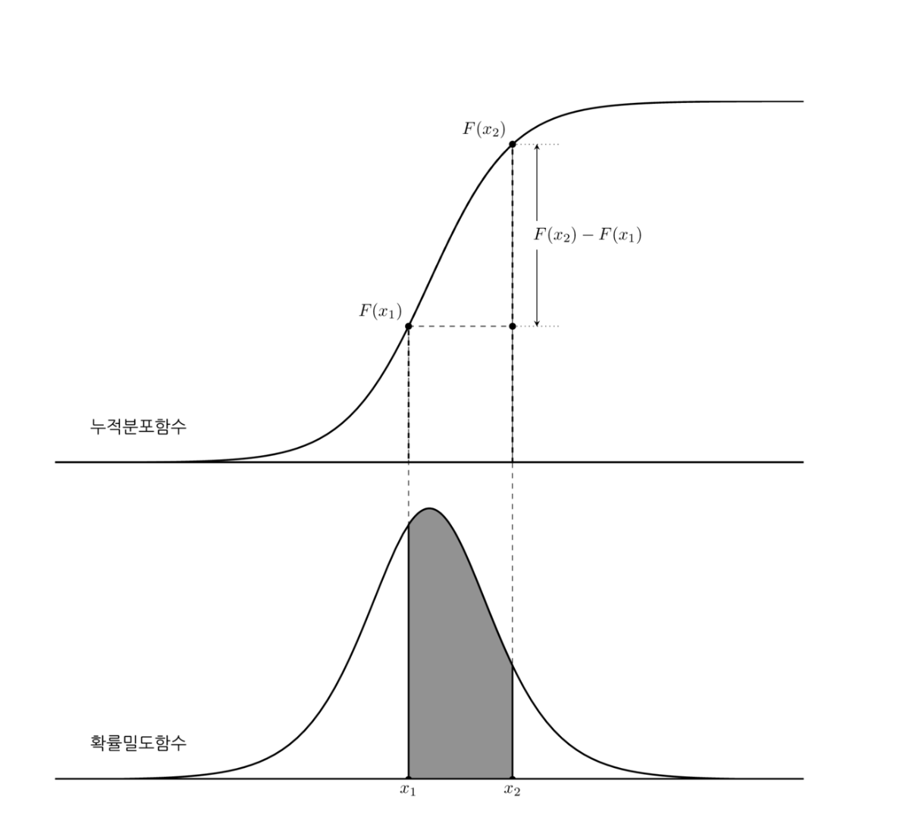

확률분포함수
Summary
- 확률분포는 어떤사건에 어느 정도의 확률이 할당되었는지 묘사한 정보이다.
- 확률분포함수에는 확률질량함수, 누적분포함수, 확률밀도함수가 있다. 확률질량함수는 유한개의 사건이 존재하는 경우 각 단순사건에 대한 확률만 정의하는 함수이다. 누적분포함수는 숫자 하나만으로 정의하는 방법으로 시작점을 음의무한대로 통일시켜 정의한 함수이다. 확률밀도함수는 누적분포함수를 미분한 도함수이다.
- 누적분포함수의 단점은 하나는 어떤 값이 더 자주 나오든가 혹은 더 가능성이 높은지에 대한 정보를 알기 힘들다는 점이다. 이를 알기 위해서는 확률 변수가 나올 수 있는 전체 구간 ( ~ )을 아주 작은 폭을 가지는 구간들로 나눈 다음 각 구간의 확률을 살펴보는 것이 편리하다. 이 때 사용할 수 있는 수학적 방법이 바로 미분(differentiation)이다. 미분은 함수의 구간을 무한대 갯수로 쪼개어 각 구간의 변화으 정도 즉, 기울기를 계산하는 방법이다. 누적 밀도 함수를 미분하여 나온 도함수(derivative)를 확률 밀도 함수(probability density function)라고 한다.
확률분포 Probability distribution
확률분포(probability distribution) 는 어떤 사건에 어느 정도의 확률이 할당되었는지 묘사한 정보이다.
확률분포함수
- 확률질량함수
- 누적분포함수
- 확률밀도함수
단순사건과 확률질량함수
단순사건(elementary event, atomic event) 은 표본을 1개만 가지는 사건이다.
단순사건끼리는 서로 교집합을 가지지 않으므로 유한개의 사건만 있는 경우, 모든 단순사건의 확률값을 알면 콜모고로프의 세번째 공리에 의해 다른 모든 사건의 확률값을 계산할 수 있다. 단 모든 단순사건의 확률의 합은 1이어야 한다.
확률질량함수(probability mass function) 는 유한개의 사건이 존재하는 경우 각 단순사건에 대한 확률만 정의하는 함수이다. 소문자 로 표시한다. 에서 는 표본이다.
예) 원소가 하나뿐인 사건 {1}에 대한 확률은 확률함수로 정의할 수 있다.
같은 내용을 확률질량함수로 나타내면 다음과 같다.
확률함수가 원소 2개 이상인 사건에 대해서도 확률을 정의할 수 있는데() 확률질량함수는 사건이 아닌 원소(그 원소만을 가진 단순사건)에 대해서만 정의 된다.
표본의 수가 무한한 경우
표본의 수가 무한하고 모든 표본에 대해 표본 하나만을 가진 사건의 확률이 동일하다면, 표본 하나에 대한 사건의 확률은 언제나 0이다.
구간
표본공간이 실수의 집합이라면 대부분의 사건(부분집합)은 시작점과 끝점이라는 두 개의 숫자로 이루어진 구간(interval)으로 표현된다. 𝑎는 구간의 시작점이고 𝑏는 구간의 끝점이다.
구간을 입력받아 확률값을 출력하는 함수는 다음처럼 이차원 함수 𝑃(𝑎,𝑏)로 표현할 수 있다.
구간의 확률만 표현할 수 있다면 여러개의 구간으로 이루어진 복잡한 사건은 콜모고로프의 공리에 따라 각 구간의 확률값의 더하기나 빼기로 표현할 수 있다.
예를 들어 다음과 같은 사건
확률 𝑃(𝐵)는 다음 두 구간의 확률의 합이다.
누적분포함수 cumulative distribution, cdf
누적분포함수(cumulative distribution), cdf 는 숫자 하나만으로 구간을 정의하는 방법으로 시작점을 모두 똑같이 음의 무한대로 통일한 특수한 구간 을 사용하는 것이다. 이 사건의 확률분포를 묘사하는 함수이다. 함수 기호로는 등 대문자 기호로 표시한다. 독립변수 는 구간의 끝점을 뜻한다.
누적분포함수와 콜모고로프의 세번째 공리를 이용하여 사건 의 확률값으로부터 대부분의 복잡한 구간사건에 대한 확률값을 계산할 수 있다.
라는 구간사건의 확률를 콜모고로프의 공리에서
단변수 함수로 되었다. 그러나 함수를 두번 호출해야한다.
누적분포함수 cdf는 다음과 같은 특징을 가진다.
- 음의 무한대에 대한 누적분포함수값은 0이다.
- 양의 무한대에 대한 누적분포함수값은 1이다.
- 입력이 크면 누적분포함수값은 커딘다. (단조증가)
위의 세가지 특성에 따라 누적분포함수는 0에서 시작하여 천천히 증가하면서 1로 다가서는 형태 를 가진다. 단조증가 성질에 의해 절대로 내려가지 않는다. 어디에 확률이 많이 할당 됐는지는 알수없다.(기울기를 알아야한다.)

확률밀도함수 probability density function, pdf
확률밀도함수(probability density function)는 누적분포함수를 미분하여 구한 도함수이다.
확률밀도함수는 특정한 구간의 확률이 다른 구간에 비해 상대적으로 얼마나 높은가를 나타내는 것이며 그 값 자체의 확률은 아니라는 점을 명심해야 한다.
미적분학의 기본 원리에 의하면 부터 사이에서 도함수인 확률밀도함수의 면적(정적분)은 적분함수인 누적분포함수의 값을 이용하여 구할 수 있다.
누적분포함수와 확률밀도함수의 관계를 적분으로 나타내면 다음과 같다.

확률밀도함수는 다음과 같은 특징을 가진다.
적분함수인 누적분포함수의 기울기가 음수가 될 수 없기 때문에 확률밀도함수는 0보다 같거나 크다.
부터 까지 적분하면 표본공간 의 확률이 되므로 값은 1이다.